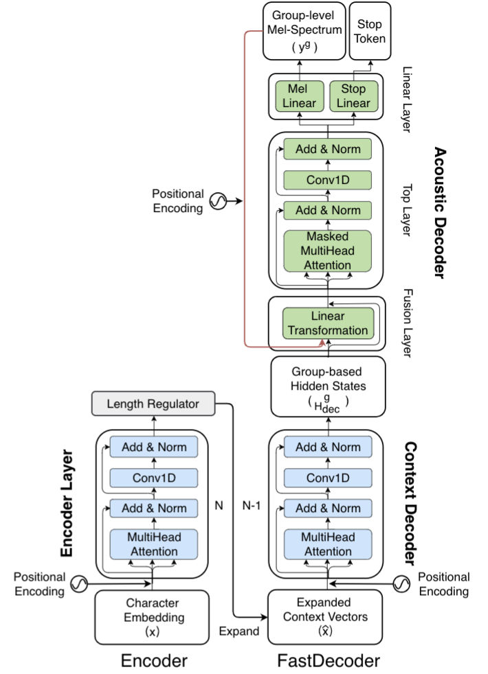

Abstract:
Non-autoregressive architecture for neural text-to-speech (TTS) allows for parallel implementation, thus reduces inference time over its autoregressive counterpart. However, such system architecture doesn’t explicitly model temporal dependency of acoustic signal as it generates individual acousticframes independently. The lack of temporal modeling often adversely impacts speech continuity, thus voice quality. In this paper, we propose a novel neural TTS model that is denoted as FastTalker. We study two novel strategies for high-quality speech synthesis at low computational cost. First, we propose a shallow autoregression mechanism that separate TTS decoding into two steps, i.e. a non-autoregressive context decoder followed by an autoregressive acoustic decoder, to minimize the autoregressive computation. Second, we propose the use of group autoregression, where the acoustic decoder generates acoustic features as a sequence of groups instead of frames, each group having multiple consecutive frames. Within a group, the acoustic features are generated in parallel. With shallow and group autoregression, FastTalker significantly reduces inference time, at the sametime, generates smooth and natural speech. Experiments show that, in terms of voice quality and naturalness, FastTalker outperforms all reference baselines, such as Tacotron2, Transformer TTS, and FastSpeech, which are known as the state-of-the-art in TTS. Moreover, FastTalker also runs at half of the inference time of autoregressive Transformer TTS, yet with superior voice quality.

Figure1: The proposed FastTalker consists of Encoder (left panel) and FastDecoder (right panel). The FastDecoder contains a non-autoregressive context decoder (in blue) followed by a group autoregressive acoustic decoder layer (in green).
Figure1: The proposed FastTalker consists of Encoder (left panel) and FastDecoder (right panel). The FastDecoder contains a non-autoregressive context decoder (in blue) followed by a group autoregressive acoustic decoder layer (in green).
We develop 3 competitive baselines that are:
1) Tacotron2 [1]2) Transformer TTS [2]
3) FastSpeech [3]
Speech Samples:
| Ground Truth | Tacotron2 | Transformer TTS | FastSpeech | FastTalker | |
|---|---|---|---|---|---|
| [1] | |||||
| [2] | |||||
| [3] | |||||
| [4] | |||||
| [5] | |||||
| [6] | |||||
| [7] | |||||
| [8] | |||||
| [9] | |||||
| [10] | |||||
| [11] | |||||
| [12] | |||||
| [13] | |||||
| [14] | |||||
| [15] |
References
[1] Jonathan Shen, Ruoming Pang, Ron J Weiss, Mike Schuster, Navdeep Jaitly,Zongheng Yang, Zhifeng Chen, Yu Zhang, Yuxuan Wang, Rj Skerrv-Ryan, et al. Natural TTS synthesis by conditioning wavenet on melspectrogram predictions. In ICASSP 2018, pages 4779–4783.[2] Naihan Li, Shujie Liu, Yanqing Liu, Sheng Zhao, and Ming Liu. Neuralspeech synthesis with transformer network. In AAAI 2019, pages 6706–6713.
[3] Yi Ren, Yangjun Ruan, Xu Tan, Tao Qin, Sheng Zhao, Zhou Zhao, andTie-Yan Liu. Fastspeech: Fast, robust and controllable text to speech. In NeuIPS 2019, pages 3171–3180.